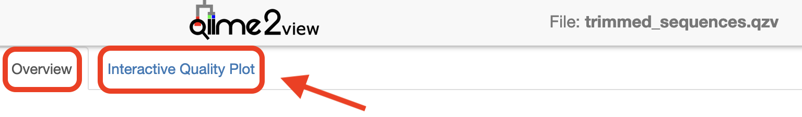
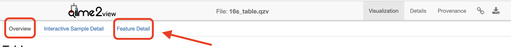
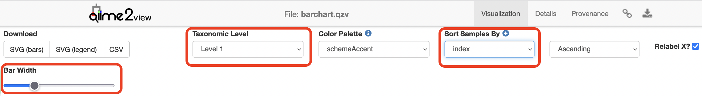
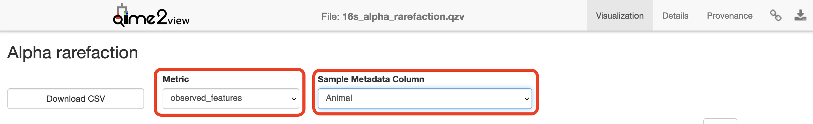
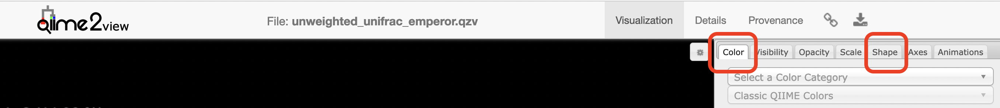
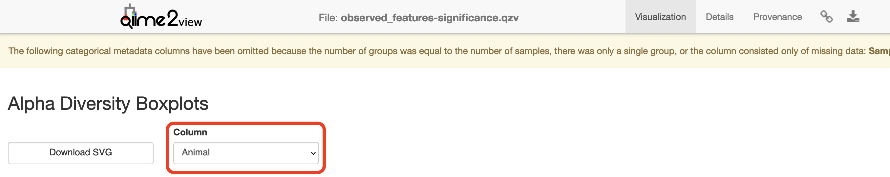
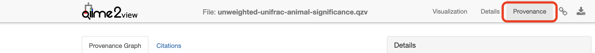

QIIME2 - Mammal Dataset¶
Anticipated workshop duration when delivered to a group of participants is 4 hours.
For queries relating to this workshop, contact Melbourne Bioinformatics (bioinformatics-training@unimelb.edu.au).
Overview¶
Topic¶
- Genomics
- Transcriptomics
- Proteomics
- Metabolomics
- Statistics and visualisation
- Structural Modelling
- Basic skills
Skill level¶
- Beginner
- Intermediate
- Advanced
This workshop is designed for participants with command-line knowledge. You will need to be able to ssh into a remote machine, navigate the directory structure and scp files from a remote computer to your local computer.
Description¶
What is the influence of sex and individual on gut microbiota of the short-beaked echidna, Tachyglossus aculeatus?
Data: Illumina MiSeq v3 paired-end (2 × 300 bp) reads (FASTQ).
Tools: QIIME 2
Pipeline:
Section 1: Importing, cleaning and quality control of the data
Section 2: Taxonomic Analysis
Section 3: Building a phylogenetic tree
Section 4: Basic visualisations and statistics
Section 5: Exporting data for further analysis in R
Section 6: Extra Information
Learning Objectives¶
At the end of this introductory workshop, you will:
- Take raw data from a sequencing facility and end with publication quality graphics and statistics
- Answer the question What is the influence of sex and individual on gut microbiota of the short-beaked echidna?
Tutorial layout¶
- There is a
Table of contentson the right-hand side which can be used to easily navigate through the tutorial by clicking the relevant section.
These grey coloured boxes are code blocks. The rectangular boxes in the top
right hand corner of this code block/grey box can be used to copy the code to
the clipboard.
Coloured boxes like these with > on the far right hand side, can be clicked to reveal the contents.
REVEALED!
Attention: Pay attention to the information in these boxes.
Important information, hints and tips.
STOP
Important information about running a command - read carefully.
Requirements and preparation¶
Important
Attendees are required to use their own laptop computers.
At least one week before the workshop, if required, participants should install the software below. This should provide sufficient time for participants to liaise with their own IT support should they encounter any IT problems.
Mode of Delivery¶
This workshop will be run on a Nectar Instance. For more information click here.
It is possible to apply for your own Nectar allocation to run this workshop independently though you will need to install any software needed.
Required Software¶
For information about required software, click here.
You will need to use a Google Chrome or Mozilla Firefox web browser to view files in QIIME2 View.
Required Data¶
-
No additional data needs to be downloaded for this workshop - it is all located on the Nectar Instance. FASTQs are located in the directory
raw_dataand a metadata (echidna_metadata.tsv) file has also been provided. -
If you wish to analyse the data independently at a later stage, it can be downloaded from here. This link contains both the FASTQs and associated metadata file.
-
If you are running this tutorial independently, you can also access the classifier that has been trained specifically for this data from here.
Slides and workshop instructions¶
Click here for slides presented during this workshop.
Click here for a printer friendly PDF version of this workshop.
Author Information¶
Developed by: Dr. Ashley Dungan, Dr. Gayle Philip and Laura Geissler
School of Biosciences, University of Melbourne; Melbourne Bioinformatics
Created/Reviewed: November 2023
Background¶
What is the influence of sex and individual on gut microbiota of the short-beaked echidna?
The Players¶
(Photo credit: David Cook)
-
Short-beaked echidna Tachyglossus aculeatus - a monotreme that has evolved to lay and incubate an egg. There are 38 samples in this dataset (This data is a subset from a larger experiment):
- 5 samples from each individual (3x male and 3x female).
- 8 control samples (DNA extraction blanks (n=5) and PCR blanks (n=3)).
-
The gut bacterial communities, or microbiome, of the echidna.
The Study¶
Indigenous microbial communities (microbiota) play critical roles in host health. Monotremes, such as the short-beaked echidna, have evolved to lay and incubate an egg. Since both faeces and eggs pass through the cloaca, the faecal microbiota of female echidnas provides an opportunity for vertical transmission of microbes to their offspring as well as maintaining foetus health. Here, we characterise the gut microbiome of female and male short-beaked echidnas from six individuals living in captivity in the Currumbin Wildlife Sanctuary in Queensland. This data is a subset from a larger experiment.
Buthgamuwa I, Fenelon JC, Roser A, Meer H, Johnston SD, Dungan AM (2023) Unraveling the fecal microbiota stability in the short-beaked echidna (Tachyglossus aculeatus) across gestation. In review at MicrobiologyOpen. Full text on ResearchSquare.
QIIME 2 Analysis platform¶
Attention
The version used in this workshop is qiime2-2023.9. Other versions of QIIME2 may result in minor differences in results.
Quantitative Insights Into Microbial Ecology 2 (QIIME 2™) is a next-generation microbiome bioinformatics platform that is extensible, free, open source, and community developed. It allows researchers to:
- Automatically track analyses with decentralised data provenance
- Interactively explore data with beautiful visualisations
- Easily share results without QIIME 2 installed
- Plugin-based system — researchers can add in tools as they wish
Viewing QIIME2 visualisations¶
Attention
In order to use QIIME2 View to visualise your files, you will need to use a Google Chrome or Mozilla Firefox web browser (not in private browsing). For more information, click here.
As this workshop is being run on a remote Nectar Instance, you will need to download the visual files (
Attention
We will be doing this step multiple times throughout this workshop to view visualisation files as they are generated.
Alternatively, if you have QIIME2 installed and are running it on your own computer, you can use qiime tools view to view the results from the command line (e.g. qiime tools view filename.qzv). qiime tools view opens a browser window with your visualization loaded in it. When you are done, you can close the browser window and press ctrl-c on the keyboard to terminate the command.
Initial Set up on Nectar¶
Byobu-screen¶
To ensure that commands continue to run should you get disconnected from your Nectar Instance, we’ll run a byobu-screen session.
Starting a byobu-screen session¶
On Nectar, to start a byobu-screen session called workshop, type
Reconnecting to a byobu-screen session¶
If you get disconnected from your Nectar Instance, follow the instructions here to resume your session.
Symbolic links to workshop data¶
Data for this workshop is stored in a central location (/mnt/shared_data/) on the Nectar file system that we will be using. We will use symbolic links (ln -s) to point to it. Symbolic links (or symlinks) are just “virtual” files or folders (they only take up a very little space) that point to a physical file or folder located elsewhere in the file system. Sequencing data can be large, and rather than unnecessarily having multiple copies of the data which can quickly take up a lot of space, we will simply point to the files needed in the shared_data folder.
cd
ln -s /mnt/shared_data/raw_data raw_data
ln -s /mnt/shared_data/echidna_metadata.tsv echidna_metadata.tsv
ln -s /mnt/shared_data/silva_138_16s_515-806_classifier.qza silva_138_16s_515-806_classifier.qza
Section 1: Importing, cleaning and quality control of the data¶
Import data¶
These samples were sequenced on a single Illumina MiSeq run using v3 (2 × 300 bp) reagents at the Walter and Eliza Hall Institute (WEHI), Melbourne, Australia. Data from WEHI came as paired-end, demultiplexed, unzipped
Here, the data files (two per sample i.e. forward and reverse reads R1 and R2 respectively) will be imported and exported as a single QIIME 2 artefact file. These samples are already demultiplexed (i.e. sequences from each sample have been written to separate files), so a metadata file is not initially required.
Note
To check the input syntax for any QIIME2 command, enter the command, followed by --help e.g. qiime tools import --help
Attention
If you haven’t already done so, make sure you are running the workshop in byobu-screen and have created the symbolic links to the workshop data.
Start by making a new directory analysis to store all the output files from this tutorial. In addition, we will create a subdirectory called seqs to store the exported sequences.
Run the command to import the raw data located in the directory raw_data and export it to a single QIIME 2 artefact file, combined.qza.
qiime tools import \
--type 'SampleData[PairedEndSequencesWithQuality]' \
--input-path raw_data \
--input-format CasavaOneEightSingleLanePerSampleDirFmt \
--output-path analysis/seqs/combined.qza
Remove primers¶
Important
Remember to ask you sequencing facility if the raw data you get has the primers attached - they may have already been removed.
These sequences still have the primers attached - they need to be removed (using cutadapt) before denoising. For this experiment, amplicons were amplified following the Earth Microbiome protocol with 515F (Caporaso)– 806R (Caporaso) primers targeting the v4 region of the 16S rRNA gene. The reads came back from the sequencer with primers attached, which are removed before denoising using cutadapt (v4.5 with python v3.8.15). With cutadapt, the sequence specified and all bases prior are trimmed; most sequences were trimmed at ~50 base pairs (bp). An error rate of 0.15 was used to maximize the number of reads that the primers were removed from while excluding nonspecific cutting. Any untrimmed read was discarded.
qiime cutadapt trim-paired \
--i-demultiplexed-sequences analysis/seqs/combined.qza \
--p-front-f GTGCCAGCMGCCGCGGTAA \
--p-front-r GGACTACHVGGGTWTCTAAT \
--p-discard-untrimmed \
--p-error-rate 0.15 \
--output-dir analysis/seqs_trimmed \
--verbose
Attention
The primers specified (515F (Caporaso)– 806R (Caporaso) targeting the v4 region of the bacterial 16S rRNA gene) correspond to this specific experiment - they will likely not work for your own data analyses.
Attention
The error rate parameter, --p-error-rate, will likely need to be adjusted for your own sample data to get 100% (or close to it) of reads trimmed.
Create and interpret sequence quality data¶
Create a viewable summary file so the data quality can be checked. Viewing the quality plots generated here helps determine trim settings.
Things to look for:
- Where does the median quality drop below 35?
- Do any of the samples have only a few sequences e.g. <1000? If so, you may want to omit them from the analysis later on in R.
Create a subdirectory in analysis called visualisations to store all files that we will visualise in one place.
qiime demux summarize \
--i-data analysis/seqs_trimmed/trimmed_sequences.qza \
--o-visualization analysis/visualisations/trimmed_sequences.qzv
Copy analysis/visualisations/trimmed_sequences.qzv to your local computer and view in QIIME 2 View (q2view).
Visualisations: Read quality and demux output
Click to view the trimmed_sequences.qzv file in QIIME 2 View.
Make sure to switch between the “Overview” and “Interactive Quality Plot” tabs in the top left hand corner. Click and drag on the plot to zoom in. Double click to zoom back out to full size. Hover over a box to see the parametric seven-number summary of the quality scores at the corresponding position.

Denoising the data¶
Trimmed sequences are now quality assessed using the dada2 plugin within QIIME2. dada2 denoises data by modelling and correcting Illumina-sequenced amplicon errors, and infers exact amplicon sequence variants (ASVs), resolving differences of as little as 1 nucleotide. Its workflow consists of filtering, de-replication, reference‐free chimera detection, and paired‐end reads merging, resulting in a feature or ASV table.
Note
This step may long time to run (i.e. hours), depending on files sizes and computational power.
Remember to adjust p-trunc-len-f and p-trunc-len-r values according to your own data.
Question: Based on your assessment of the quality plots from the p-trunc-len-f and p-trunc-len-r in the command below? Hint: At what base pair does the median quality drop below 35?
Answer
For version qiime2.2023.9 (other QIIME2 versions may slightly differ). Upload your trimmed_sequences.qzv file to QIIME2 view, change to the “Interactive Quality Plot” tab and zoom in on the plots to find the relevant base pairs for the QIIME2 version you are using. Median quality score for raw reads dropped below 35 at 253 and 208 bp for the forward and reverse reads, respectively. However, being conservative and truncating significantly less than these values provides higher quality data with more reads retained. In this case, we will use p-trunc-len-f 213 and p-trunc-len-r 168 (40 bp extra truncated). Researchers should play around with this and compare the denoising stats after various trimming lengths.
In the following command, a pooling method of ‘pseudo’ is selected. With the pseudo-pooling method, samples are denoised independently once, ASVs detected in at least 2 samples are recorded, and samples are denoised independently a second time, but this time with prior knowledge of the recorded ASVs and thus higher sensitivity to those ASVs. This is better than the default of ‘independent’ (where samples are denoised independently) when you expect samples in the run to have similar ASVs overall.
STOP - Workshop participants only
Due to computational limitations in a workshop setting, this command will be run staggered (by co-ordinating with other users on the Nectar Instance you are logged in to), with no more than two users per Instance running the command at the same time.
The specified output directory must not pre-exist.
qiime dada2 denoise-paired \
--i-demultiplexed-seqs analysis/seqs_trimmed/trimmed_sequences.qza \
--p-trunc-len-f xx \
--p-trunc-len-r xx \
--p-n-threads 0 \
--p-pooling-method 'pseudo' \
--output-dir analysis/dada2out \
--verbose
Generate summary files¶
A metadata file is required which provides the key to gaining biological insight from your data. The file
Things to look for:
- How many features (ASVs) were generated? Are the communities high or low diversity?
- Do BLAST searches of the representative sequences make sense? Are the features what you would expect e.g. marine or terrestrial?
- Have a large number (e.g. >50%) of sequences been lost during denoising/filtering? If so, the settings might be too stringent.
qiime metadata tabulate \
--m-input-file analysis/dada2out/denoising_stats.qza \
--o-visualization analysis/visualisations/16s_denoising_stats.qzv \
--verbose
Copy analysis/visualisations/16s_denoising_stats.qzv to your local computer and view in QIIME 2 View (q2view).
Visualisation: Denoising Stats
Click to view the 16s_denoising_stats.qzv file in QIIME 2 View.
qiime feature-table summarize \
--i-table analysis/dada2out/table.qza \
--m-sample-metadata-file echidna_metadata.tsv \
--o-visualization analysis/visualisations/16s_table.qzv \
--verbose
Copy analysis/visualisations/16s_table.qzv to your local computer and view in QIIME 2 View (q2view).
Visualisations: Feature/ASV summary
Click to view the 16s_table.qzv file in QIIME 2 View.
Make sure to switch between the “Overview” and “Feature Detail” tabs in the top left hand corner.

qiime feature-table tabulate-seqs \
--i-data analysis/dada2out/representative_sequences.qza \
--o-visualization analysis/visualisations/16s_representative_seqs.qzv \
--verbose
Copy analysis/visualisations/16s_representative_seqs.qzv to your local computer and view in QIIME 2 View (q2view).
Visualisation: Representative Sequences
Click to view the 16s_representative_seqs.qzv file in QIIME 2 View.
Section 2: Taxonomic Analysis¶
Assign taxonomy¶
Here we will classify each identical read or Amplicon Sequence Variant (ASV) to the highest resolution based on a database. Common databases for bacteria datasets are Greengenes, SILVA, Ribosomal Database Project, or Genome Taxonomy Database. See Porter and Hajibabaei, 2020 for a review of different classifiers for metabarcoding research. The classifier chosen is dependent upon:
- Previously published data in a field
- The target region of interest
- The number of reference sequences for your organism in the database and how recently that database was updated.
A classifier has already been trained for you for the V4 region of the bacterial 16S rRNA gene using the SILVA database. The next step will take a while to run. The output directory cannot previously exist.
n_jobs = 1 This runs the script using all available cores
Note
The classifier used here is only appropriate for the specific 16S rRNA region that this data represents. You will need to train your own classifier for your own data. For more information about training your own classifier, see Section 6: Extra Information.
STOP - Workshop participants only
Due to time limitations in a workshop setting, please do NOT run the qiime feature-classifier classify-sklearn command below. You will need to access a pre-computed classification.qza file that this command generates by running the following: cd; mkdir analysis/taxonomy; cp /mnt/shared_data/pre_computed/classification.qza analysis/taxonomy. If you have accidentally run the command below, ctrl-c will terminate it.
qiime feature-classifier classify-sklearn \
--i-classifier silva_138_16s_515-806_classifier.qza \
--i-reads analysis/dada2out/representative_sequences.qza \
--p-n-jobs 1 \
--output-dir analysis/taxonomy \
--verbose
Warning
This step often runs out of memory on full datasets. Some options are to change the number of cores you are using (adjust --p-n-jobs) or add --p-reads-per-batch 10000 and try again. The QIIME 2 forum has many threads regarding this issue so always check there was well.
Generate a viewable summary file of the taxonomic assignments.¶
qiime metadata tabulate \
--m-input-file analysis/taxonomy/classification.qza \
--o-visualization analysis/visualisations/taxonomy.qzv \
--verbose
Copy analysis/visualisations/taxonomy.qzv to your local computer and view in QIIME 2 View (q2view).
Visualisation: Taxonomy
Filtering¶
Filter out reads classified as mitochondria and chloroplast. Unassigned ASVs are retained. Generate a viewable summary file of the new table to see the effect of filtering.
According to QIIME developer Nicholas Bokulich, low abundance filtering (i.e. removing ASVs containing very few sequences) is not necessary under the ASV model.
qiime taxa filter-table \
--i-table analysis/dada2out/table.qza \
--i-taxonomy analysis/taxonomy/classification.qza \
--p-exclude Mitochondria,Chloroplast \
--o-filtered-table analysis/taxonomy/16s_table_filtered.qza \
--verbose
qiime feature-table summarize \
--i-table analysis/taxonomy/16s_table_filtered.qza \
--m-sample-metadata-file echidna_metadata.tsv \
--o-visualization analysis/visualisations/16s_table_filtered.qzv \
--verbose
Copy analysis/visualisations/16s_table_filtered.qzv to your local computer and view in QIIME 2 View (q2view).
Visualisation: 16s_table_filtered
Click to view the 16s_table_filtered.qzv file in QIIME 2 View.
Section 3: Build a phylogenetic tree¶
The next step does the following:
- Perform an alignment on the representative sequences.
- Mask sites in the alignment that are not phylogenetically informative.
- Generate a phylogenetic tree.
- Apply mid-point rooting to the tree.
A phylogenetic tree is necessary for any analyses that incorporates information on the relative relatedness of community members, by incorporating phylogenetic distances between observed organisms in the computation. This would include any beta-diversity analyses and visualisations from a weighted or unweighted Unifrac distance matrix.
Use one thread only (which is the default action) so that identical results can be produced if rerun.
qiime phylogeny align-to-tree-mafft-fasttree \
--i-sequences analysis/dada2out/representative_sequences.qza \
--o-alignment analysis/tree/aligned_16s_representative_seqs.qza \
--o-masked-alignment analysis/tree/masked_aligned_16s_representative_seqs.qza \
--o-tree analysis/tree/16s_unrooted_tree.qza \
--o-rooted-tree analysis/tree/16s_rooted_tree.qza \
--p-n-threads 1 \
--verbose
Section 4: Basic visualisations and statistics¶
ASV relative abundance bar charts¶
Create bar charts to compare the relative abundance of ASVs across samples.
qiime taxa barplot \
--i-table analysis/taxonomy/16s_table_filtered.qza \
--i-taxonomy analysis/taxonomy/classification.qza \
--m-metadata-file echidna_metadata.tsv \
--o-visualization analysis/visualisations/barchart.qzv \
--verbose
Copy analysis/visualisations/barchart.qzv to your local computer and view in QIIME 2 View (q2view). Try selecting different taxonomic levels and metadata-based sample sorting.
Visualisations: Taxonomy Barplots
Click to view the barchart.qzv file in QIIME 2 View.
Increase the “Bar Width”, select “Animal” or “Sex” in “Sort Samples By” drop-down menu and explore the resulting barplots by changing the levels in the “Change Taxonomic Level” dropdown menu (Select Level 1, then Level 3, and then Level 5 for example).

Rarefaction curves¶
Generate rarefaction curves to determine whether the samples have been sequenced deeply enough to capture all the community members. The max depth setting will depend on the number of sequences in your samples.
Things to look for:
- Do the curves for each sample plateau? If they don’t, the samples haven’t been sequenced deeply enough to capture the full diversity of the bacterial communities, which is shown on the y-axis.
- At what sequencing depth (x-axis) do your curves plateau? This value will be important for downstream analyses, particularly for alpha diversity analyses.
Note
The value that you provide for –p-max-depth should be determined by reviewing the “Frequency per sample” information presented in the
qiime diversity alpha-rarefaction \
--i-table analysis/taxonomy/16s_table_filtered.qza \
--i-phylogeny analysis/tree/16s_rooted_tree.qza \
--p-max-depth 20000 \
--p-min-depth 500 \
--p-steps 40 \
--m-metadata-file echidna_metadata.tsv \
--o-visualization analysis/visualisations/16s_alpha_rarefaction.qzv \
--verbose
Copy analysis/visualisations/16s_alpha_rarefaction.qzv to your local computer and view in QIIME 2 View (q2view).
Visualisation: Rarefaction
Click to view the 16s_alpha_rarefaction.qzv file in QIIME 2 View.
Select “Animal” in the “Sample Metadata Column” and “observed_features” under “Metric”:

Alpha and beta diversity analysis¶
The following is taken directly from the Moving Pictures tutorial and adapted for this data set. QIIME 2’s diversity analyses are available through the q2-diversity plugin, which supports computing alpha- and beta- diversity metrics, applying related statistical tests, and generating interactive visualisations. We’ll first apply the core-metrics-phylogenetic method, which rarefies a FeatureTable[Frequency] to a user-specified depth, computes several alpha- and beta- diversity metrics, and generates principle coordinates analysis (PCoA) plots using Emperor for each of the beta diversity metrics.
The metrics computed by default are:
- Alpha diversity (operate on a single sample (i.e. within sample diversity)).
- Shannon’s diversity index (a quantitative measure of community richness)
- Observed OTUs (a qualitative measure of community richness)
- Faith’s Phylogenetic Diversity (a qualitative measure of community richness that incorporates phylogenetic relationships between the features)
- Evenness (or Pielou’s Evenness; a measure of community evenness)
- Beta diversity (operate on a pair of samples (i.e. between sample diversity)).
- Jaccard distance (a qualitative measure of community dissimilarity)
- Bray-Curtis distance (a quantitative measure of community dissimilarity)
- unweighted UniFrac distance (a qualitative measure of community dissimilarity that incorporates phylogenetic relationships between the features)
- weighted UniFrac distance (a quantitative measure of community dissimilarity that incorporates phylogenetic relationships between the features)
An important parameter that needs to be provided to this script is --p-sampling-depth, which is the even sampling (i.e. rarefaction) depth that was determined above. As most diversity metrics are sensitive to different sampling depths across different samples, this script will randomly subsample the counts from each sample to the value provided for this parameter. For example, if --p-sampling-depth 500 is provided, this step will subsample the counts in each sample without replacement, so that each sample in the resulting table has a total count of 500. If the total count for any sample(s) are smaller than this value, those samples will be excluded from the diversity analysis. Choosing this value is tricky. We recommend making your choice by reviewing the information presented in the
qiime diversity core-metrics-phylogenetic \
--i-phylogeny analysis/tree/16s_rooted_tree.qza \
--i-table analysis/taxonomy/16s_table_filtered.qza \
--p-sampling-depth 7316 \
--m-metadata-file echidna_metadata.tsv \
--output-dir analysis/diversity_metrics
Copy the .qzv files created from the above command into the visualisations subdirectory.
To view the differences between sample composition using unweighted UniFrac in ordination space, copy analysis/visualisations/unweighted_unifrac_emperor.qzv to your local computer and view in QIIME 2 View (q2view).
Visualisations: Unweighted UniFrac Emperor Ordination
Click to view the unweighted_unifrac_emperor.qzv file in QIIME 2 View.
On q2view, select the “Color” tab, choose “Animal” under the “Select a Color Category” dropdown menu, then select the “Shape” tab and choose “Sex” under the “Select a Shape Category” dropdown menu.

Next, we’ll test for associations between categorical metadata columns and alpha diversity data. We’ll do that here for observed ASVs and evenness metrics.
qiime diversity alpha-group-significance \
--i-alpha-diversity analysis/diversity_metrics/observed_features_vector.qza \
--m-metadata-file echidna_metadata.tsv \
--o-visualization analysis/visualisations/observed_features-significance.qzv
Copy analysis/visualisations/observed_features-significance.qzv to your local computer and view in QIIME 2 View (q2view).
Visualisation: Observed Diversity output
Click to view the observed_features-significance.qzv file in QIIME 2 View.
Select “Animal” under the “Column” dropdown menu.

qiime diversity alpha-group-significance \
--i-alpha-diversity analysis/diversity_metrics/evenness_vector.qza \
--m-metadata-file echidna_metadata.tsv \
--o-visualization analysis/visualisations/evenness-group-significance.qzv
Copy analysis/visualisations/evenness-group-significance.qzv to your local computer and view in QIIME 2 View (q2view).
Visualisation: Evenness output
Click to view the evenness-group-significance.qzv file in QIIME 2 View.
Select “Animal” under the “Column” dropdown menu.
Finally, we’ll analyse sample composition in the context of categorical metadata using a permutational multivariate analysis of variance (PERMANOVA, first described in Anderson (2001)) test using the beta-group-significance command. The following commands will test whether distances between samples within a group are more similar to each other then they are to samples from the other groups. If you call this command with the --p-pairwise parameter, as we’ll do here, it will also perform pairwise tests that will allow you to determine which specific pairs of groups differ from one another, if any. This command can be slow to run, especially when passing --p-pairwise, since it is based on permutation tests. So, unlike the previous commands, we’ll run beta-group-significance on specific columns of metadata that we’re interested in exploring, rather than all metadata columns to which it is applicable. Here we’ll apply this to our unweighted UniFrac distances, using two sample metadata columns, as follows.
qiime diversity beta-group-significance \
--i-distance-matrix analysis/diversity_metrics/unweighted_unifrac_distance_matrix.qza \
--m-metadata-file echidna_metadata.tsv \
--m-metadata-column Sex \
--o-visualization analysis/visualisations/unweighted-unifrac-gender-significance.qzv \
--p-pairwise
Copy analysis/visualisations/unweighted-unifrac-gender-significance.qzv to your local computer and view in QIIME 2 View (q2view).
Visualisation: Gender significance output
Click to view the unweighted-unifrac-gender-significance.qzv file in QIIME 2 View.
qiime diversity beta-group-significance \
--i-distance-matrix analysis/diversity_metrics/unweighted_unifrac_distance_matrix.qza \
--m-metadata-file echidna_metadata.tsv \
--m-metadata-column Animal \
--o-visualization analysis/visualisations/unweighted-unifrac-animal-significance.qzv \
--p-pairwise
Copy analysis/visualisations/unweighted-unifrac-animal-significance.qzv to your local computer and view in QIIME 2 View (q2view).
Visualisation: Animal significance output
Click to view the unweighted-unifrac-animal-significance.qzv file in QIIME 2 View.
Provenance
Click to view the unweighted-unifrac-animal-significance.qzv provenance file in QIIME 2 View.

Section 5: Exporting data for further analysis in R¶
You need to export your ASV table, taxonomy table, and tree file for analyses in R. Many file formats can be accepted.
Export unrooted tree as .nwk format as required for the R package phyloseq.
qiime tools export \
--input-path analysis/tree/16s_unrooted_tree.qza \
--output-path analysis/export
Create a BIOM table with taxonomy annotations. A FeatureTable[Frequency] artefact will be exported as a BIOM v2.1.0 formatted file.
qiime tools export \
--input-path analysis/taxonomy/16s_table_filtered.qza \
--output-path analysis/export
Then export BIOM to TSV
biom convert \
-i analysis/export/feature-table.biom \
-o analysis/export/feature-table.tsv \
--to-tsv
Export Taxonomy as TSV
qiime tools export \
--input-path analysis/taxonomy/classification.qza \
--output-path analysis/export
Delete the header lines of the .tsv files
sed '1d' analysis/export/taxonomy.tsv > analysis/export/taxonomy_noHeader.tsv
sed '1d' analysis/export/feature-table.tsv > analysis/export/feature-table_noHeader.tsv
Some packages require your data to be in a consistent order, i.e. the order of your ASVs in the taxonomy table rows to be the same order of ASVs in the columns of your ASV table. It’s recommended to clean up your taxonomy file. You can have blank spots where the level of classification was not completely resolved.
Section 6: Extra Information¶
STOP
This section contains information on how to train the classifier for analysing your own data. This will NOT be covered in the workshop.
Train SILVA v138 classifier for 16S/18S rRNA gene marker sequences.¶
The newest version of the SILVA database (v138) can be trained to classify marker gene sequences originating from the 16S/18S rRNA gene. Reference files silva-138-99-seqs.qza and silva-138-99-tax.qza were downloaded from SILVA and imported to get the artefact files. You can download both these files from here.
Reads for the region of interest are first extracted. You will need to input your forward and reverse primer sequences. See QIIME2 documentation for more information.
qiime feature-classifier extract-reads \
--i-sequences silva-138-99-seqs.qza \
--p-f-primer FORWARD_PRIMER_SEQUENCE \
--p-r-primer REVERSE_PRIMER_SEQUENCE \
--o-reads silva_138_marker_gene.qza \
--verbose
The classifier is then trained using a naive Bayes algorithm. See QIIME2 documentation for more information.